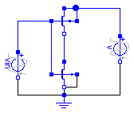
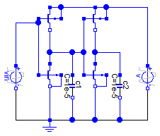
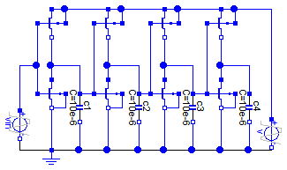
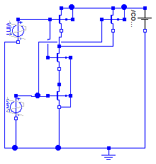
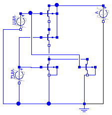
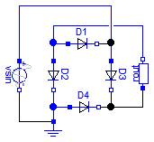

This package Example circuits contains some useful examples to demonstrate how the library is working and how the models can be used.
Extends from Modelica.Icons.ExamplesPackage (Icon for packages containing runnable examples).
| Name | Description |
|---|---|
| Simple inverter circuit | |
| Two inverters where transistor models use different modelcard instances | |
| Two inverters with MOS models defined by inheritance | |
| Four inverters with MOSFET level 1, using private record as model card | |
| MOS Nand gate circuit | |
| MOS NOR gate circuit | |
| Graetz rectifier circuit | |
| Oscillator circuit |
 Modelica.Electrical.Spice3.Examples.Inverter
Modelica.Electrical.Spice3.Examples.Inverter
An inverter is an electrical circuit that consists of a PMOS and a NMOS transistor. Its task is to turn the input voltage from high potential to low potential or the other way round.
Simulate until 1.e-11 s. Display the input voltage Vin.p.v as well as the output voltage mp.S.v. It shows that the input voltage is inverted.
Extends from Modelica.Icons.Example (Icon for runnable examples).
model Inverter "Simple inverter circuit" //-------------------------------------------------------------------------------------------------------------- //-------------------------------------------------------------------------------------------------------------- extends Modelica.Icons.Example;Semiconductors.M_PMOS mp(modelcard( RD=0, RS=0, CBD=0, CBS=0)); Semiconductors.M_NMOS mn(modelcard( RD=0, RS=0, CBD=0, CBS=0)); Basic.Ground ground; Sources.V_pulse vin( V2=5, TD=4e-12, TR=0.1e-12, TF=0.1e-12, PW=1e-12, PER=2e-12); Sources.V_pulse v(V2=5, TR=0.1e-12); equationconnect(mn.D,mp. S); connect(mp.G,mn. G); connect(mn.S,mn. B); connect(mp.B,mp. D); connect(mn.S, ground.p); connect(v.p,mp. D); connect(v.n, ground.p); connect(vin.p,mp. G); connect(vin.n, ground.p); end Inverter;
Modelica.Electrical.Spice3.Examples.InvertersApartRecord

An inverter is an electrical circuit that consists of a PMOS and a NMOS. Its task is to turn the input voltage from high potential to low potential or the other way round. This circuit InverterApartModel contains two inverters. The input voltage of the first inverter is nearly equal to the output voltage of the second inverter. Capacities cause some differences.
To see the typical behavior of the circuit the input voltages and the output voltages should be plotted. Besides that it can be interesting to watch the outputvoltage of the first inverter. Simulated until t=5s.
Input voltages: vin.p.v and v.p.v
Output voltage of the first inverter: mn1.ND.v
Output voltage of the second Inverter: mn2.ND.v
This example shows one posibility to make the record of the technology parameters avaliable for more than one transistor. For each transistor in the circuit a record with the technology parameters is made avaliable as an instance of the record modelcardMOS. In this circuit we need two different records for technology parameters, one for PMOS (MPmos) and one for NMOS (MNmos). This instances of the record for the technology parameters were made avaliable for every transistor as one of theirs parameters (Spice3.Repository.MOS mn1(mtype=0, modelcard=MNmos).
Extends from Modelica.Icons.Example (Icon for runnable examples).
| Type | Name | Default | Description |
|---|---|---|---|
| ModelcardMOS | MPmos | Specified modelcardMOS for MPmos | |
| ModelcardMOS | MNmos | Specified modelcardMOS for MNmos |
model InvertersApartRecord "Two inverters where transistor models use different modelcard instances" extends Modelica.Icons.Example;Basic.Ground ground; //-------------------------------------------------------------------------------------------------------------- /*apart record: For each transistor in the circuit a record with the technologieparameters is made avaliable as an instance of the record modelcardMOS */ parameter Semiconductors.ModelcardMOS MPmos(GAMMA=0.37) "Specified modelcardMOS for MPmos"; //instance of record modelcardMOS parameter Semiconductors.ModelcardMOS MNmos(GAMMA=0.37, LAMBDA=0.02) "Specified modelcardMOS for MNmos"; //instance of record modelcardMOSSemiconductors.M_PMOS mp1(modelcard=MPmos); Semiconductors.M_NMOS mn1(modelcard=MNmos); Semiconductors.M_PMOS mp2(modelcard=MPmos); Semiconductors.M_NMOS mn2(modelcard=MNmos); //--------------------------------------------------------------------------------------------------------------Basic.C_Capacitor c1(C=1e-5); Basic.C_Capacitor c2(C=1e-5); Sources.V_pulse vin( V2=5, TD=2, TR=1); Sources.V_pulse v(V2=5, TR=1); equationconnect(mp1.B, mp1.D); connect(mn1.S, ground.p); connect(mp1.S, mn1.D); connect(mn1.G, mp1.G); connect(mn1.B, mn1.S); connect(mp2.B, mp2.D); connect(mn2.S, ground.p); connect(mp2.S, mn2.D); connect(mn2.G, mp2.G); connect(mn2.B, mn2.S); connect(mp2.G, mn1.D); connect(c1.p, mn1.D); connect(mn2.D, c2.p); connect(c2.n, ground.p); connect(c1.n, ground.p); connect(mp1.G, vin.p); connect(vin.n, ground.p); connect(v.p, mp2.D); connect(mp1.D, mp2.D); connect(v.n, ground.p); end InvertersApartRecord;
Modelica.Electrical.Spice3.Examples.InvertersExtendedModel
An inverter is an electrical circuit that consists of a PMOS and a NMOS. Its task is to turn the input voltage from high potential to low potential or the other way round. This circuit InverterExtendedModel contains two inverters. The input voltage of the first inverter is nearly equal to the output voltage of the second inverter. Capacities cause some differences.
To see the typical behavior of the circuit the input voltages and the output voltages should be plotted. Besides that it can be interesting to watch the outputvoltage of the first inverter. Simulated until t=5s.
Input voltages: vin.p.v and v.p.v
Output voltage of the first inverter: mn1.ND.v
Output voltage of the second Inverter: mn2.ND.v
This example shows one posibility to make the record of the technology parameters avaliable for more than one transistor. For each set of technology parameters an apart model has to be defined (in this example: MPmos ans MNmos). Inside the model definition the technology parameters are appointed (Spice3.Semiconductors.modelcardMOS M(GAMMA=0.37, LAMBDA=0.02)). Every model extends a transistor. In this process the required technologieparameters are specified (extends Spice3.Repository.MOS(final mtype=1, modelcard=M). To make transistors available in the circuit instances of the defined models are applied (MPmos mp1; MNmos mn1; MPmos mp2; MNmos mn2;).
Extends from Modelica.Icons.Example (Icon for runnable examples).
model InvertersExtendedModel "Two inverters with MOS models defined by inheritance" extends Modelica.Icons.Example;Basic.Ground ground; //-------------------------------------------------------------------------------------------------------------- /*extended model: For each set of technology parameters an apart model has to be defined. Every transistor extends this model. In this process the required technology parameters are specified. */model MPmos "PMOS transistor with specified modelcard" Semiconductors.ModelcardMOS M(GAMMA=0.37); extends Semiconductors.M_PMOS(modelcard=M); end MPmos ;model MNmos "NMOS transistor with specified modelcard" Semiconductors.ModelcardMOS M(GAMMA=0.37, LAMBDA=0.02); extends Semiconductors.M_NMOS(modelcard=M); end MNmos ;MPmos mp1; MNmos mn1; MPmos mp2; MNmos mn2; //--------------------------------------------------------------------------------------------------------------Basic.C_Capacitor c1(C=1e-5); Basic.C_Capacitor c2(C=1e-5); Sources.V_pulse vin( V2=5, TD=2, TR=1); Sources.V_pulse v(V2=5, TR=1); equationconnect(mp1.B, mp1.D); connect(mn1.S, ground.p); connect(mp1.S, mn1.D); connect(mn1.G, mp1.G); connect(mn1.B, mn1.S); connect(mp2.B, mp2.D); connect(mn2.S, ground.p); connect(mp2.S, mn2.D); connect(mn2.G, mp2.G); connect(mn2.B, mn2.S); connect(mp2.G, mn1.D); connect(c1.p, mn1.D); connect(mn2.D, c2.p); connect(c2.n, ground.p); connect(c1.n, ground.p); connect(vin.p, mp1.G); connect(vin.n, ground.p); connect(v.p, mp2.D); connect(mp2.D, mp1.D); connect(v.n, ground.p); end InvertersExtendedModel;
Modelica.Electrical.Spice3.Examples.FourInverters
This circuit that contains four inverter was designed to show the functionality of the MOS transistor models. To see the behavior of the circuit the output voltages of each inverter should be displayed (mp1.NS.v, mp2.NS.v, mp3.NS.v, mp4.NS.v). The output voltages of the second an fourth inverter and the inputvoltage of the first inverter have the same potential. The output voltages of the first and third inverter have the opposite potential compared with inverter 2 and 4.
Simulate until t=5s. The outputvalues should be: mp1.NS.v, mp2.NS.v, mp3.NS.v, mp4.NS.v and vgate.p.v
Extends from Modelica.Icons.Example (Icon for runnable examples).
| Type | Name | Default | Description |
|---|---|---|---|
| ModelcardMOS | modp | private PMOS modelcard | |
| ModelcardMOS | modn | provate NMOS modelcard |
model FourInverters "Four inverters with MOSFET level 1, using private record as model card" extends Modelica.Icons.Example;Basic.Ground ground; parameter Semiconductors.ModelcardMOS modp "private PMOS modelcard"; parameter Semiconductors.ModelcardMOS modn "provate NMOS modelcard";Semiconductors.M_PMOS mp1(modelcard=modp); Semiconductors.M_NMOS mn1(modelcard=modn); Semiconductors.M_PMOS mp2(modelcard=modp); Semiconductors.M_NMOS mn2(modelcard=modn); Semiconductors.M_PMOS mp3(modelcard=modp); Semiconductors.M_PMOS mp4(modelcard=modn); Semiconductors.M_NMOS mn3(modelcard=modp); Semiconductors.M_NMOS mn4(modelcard=modn); Basic.C_Capacitor c1(C=10e-6); Basic.C_Capacitor c2(C=10e-6); Basic.C_Capacitor c3(C=10e-6); Basic.C_Capacitor c4(C=10e-6); Sources.V_pulse vin( V2=5, TD=2, TR=1); Sources.V_pulse v(V2=5, TR=1); equationconnect(mp1.B, mp1.D); connect(mn1.S, ground.p); connect(mp1.S, mn1.D); connect(mn1.G, mp1.G); connect(mn1.B, mn1.S); connect(mp2.B, mp2.D); connect(mn2.S, ground.p); connect(mp2.S, mn2.D); connect(mn2.G, mp2.G); connect(mn2.B, mn2.S); connect(c1.p, mn1.D); connect(mn2.D, c2.p); connect(c2.n, ground.p); connect(c1.n, ground.p); connect(c3.n, ground.p); connect(c4.n, ground.p); connect(mn4.B, mn4.S); connect(mn3.B, mn3.S); connect(mp3.B, mp3.D); connect(mp4.B, mp4.D); connect(mp3.S, mn3.D); connect(mp4.S, mn4.D); connect(mn3.S, ground.p); connect(mn4.S, ground.p); connect(c3.p, mn3.D); connect(c4.p, mn4.D); connect(c2.p, mn3.G); connect(mn3.G, mp3.G); connect(c3.p, mn4.G); connect(mn4.G, mp4.G); connect(c1.p, mn2.G); connect(vin.p, mn1.G); connect(vin.n, ground.p); connect(v.p, mp4.D); connect(v.n, ground.p); connect(mp3.D, mp4.D); connect(mp2.D, mp3.D); connect(mp1.D, mp2.D); end FourInverters;
Modelica.Electrical.Spice3.Examples.Nand
In nearly every electronic the basic circuit "nand" are used. A nand contains two PMOS and two NMOS. The faulty wiring can be seen in the graphical mode. If and only if the two input voltages have high potential, the output voltage has low potential, otherwise the output voltage has high potential.
Nand truth table (1 means true, it is represented by the 5V voltage):
input voltage vin1 |
input voltage vin2 |
output voltage mNMOS1.NS |
0 |
0 |
1 |
0 |
1 |
1 |
1 |
0 |
1 |
1 |
1 |
0 |
Simulate until t=2e-7s. Display the two input voltages vin1.p.v and vin2.p.v and the output voltage mNMOS1.ND.v, which becomes zero only if both input values are high.
Extends from Modelica.Icons.Example (Icon for runnable examples).
model Nand "MOS Nand gate circuit" extends Modelica.Icons.Example;Semiconductors.M_PMOS mp1( L=2e-5, W=1e-5, modelcard(PHI=0.7)); Semiconductors.M_PMOS mp2(modelcard(PHI=0.7)); Semiconductors.M_NMOS mn2; Semiconductors.M_NMOS mn1; Sources.V_constant vconstant(V=5); Basic.Ground ground; Sources.V_pulse vin1( TR=1e-9, TF=1e-9, V2=5, TD=2e-8, PW=4e-8, PER=8e-8); Sources.V_pulse vin2( V2=5, TR=1e-9, TF=1e-9, TD=1e-8, PW=4e-8, PER=8e-8); equationconnect(mp1.B, mp1.D); connect(mp2.B, mp2.D); connect(vconstant.p, mp2.D); connect(mp2.D, mp1.D); connect(mp1.G, mn1.G); connect(mp1.G, vin1.p); connect(vin1.n, ground.p); connect(mp2.G, mn2.G); connect(mn2.G, vin2.p); connect(vin2.n, ground.p); connect(mn2.S, ground.p); connect(mn1.B, mn2.B); connect(mn2.B, mn2.S); connect(mn1.S, mn2.D); connect(mp1.S, mn1.D); connect(mp2.S, mn1.D); connect(vconstant.n, ground.p); end Nand;
Modelica.Electrical.Spice3.Examples.Nor
In nearly every electronic the basic circuit "nor" is used. A nor contains two PMOS and two NMOS. The faulty wiring can be seen in the graphical mode. If and only if the two inputvoltages have low potential, the outputvoltage has high potential, otherwise the outputvoltage has low potential.
Nor truth table (1 means true, it is represented by the 5V voltage):
input voltage vin1 |
input voltage vin2 |
output voltage m_PMOS1.NS |
0 |
0 |
1 |
0 |
1 |
0 |
1 |
0 |
0 |
1 |
1 |
0 |
Simulate until t=5s. Display the two input voltages vin1.p.v and vin2.p.v and the output voltage mPMOS1.NS.v.
The output value in the example shows a behaviour "near" the one of the truth table, since the capacitances are huge. Therefore loading is not finished before the next input changes.
Extends from Modelica.Icons.Example (Icon for runnable examples).
model Nor "MOS NOR gate circuit" extends Modelica.Icons.Example;Semiconductors.M_PMOS mp1(modelcard( RD=1e-4, RS=1e-4, CBD=1e-5, CBS=1e-5, CGSO=1e-5, CGDO=1e-5, CGBO=1e-5)); Semiconductors.M_PMOS mp2(modelcard( RD=1e-4, RS=1e-4, CBD=1e-5, CBS=1e-5, CGSO=1e-5, CGDO=1e-5, CGBO=1e-5)); Semiconductors.M_NMOS mn1(modelcard( RD=1e-4, RS=1e-4, CBD=1e-5, CBS=1e-5, CGSO=1e-5, CGDO=1e-5, CGBO=1e-5)); Semiconductors.M_NMOS mn2(modelcard( RD=1e-4, RS=1e-4, CBD=1e-5, CBS=1e-5, CGSO=1e-5, CGDO=1e-5, CGBO=1e-5)); Basic.Ground ground; Sources.V_pulse vin1( V2=5, TR=0.001, TF=0.001, PW=2, PER=10, TD=2); Sources.V_pulse vin2( V2=5, TR=0.001, TF=0.001, PW=2, PER=10, TD=1); Sources.V_pulse v( TD=0.5, TR=0.1, V2=5); equationconnect(mn1.B, mn1.S); connect(mn2.B, mn2.S); connect(mn2.S, ground.p); connect(mn1.S, ground.p); connect(vin2.p, mn1.G); connect(vin2.n, ground.p); connect(vin1.p, mp1.G); connect(vin1.n, ground.p); connect(mp1.S, mp2.D); connect(mp2.S, mn1.D); connect(mn2.D, mn1.D); connect(vin2.p, mp2.G); connect(vin1.p, mn2.G); connect(mp1.B, mp1.D); connect(mp2.B, mp1.B); connect(v.p, mp1.D); connect(v.n, ground.p); end Nor;
Modelica.Electrical.Spice3.Examples.Graetz
The Graetz rectifier circuit is to show the behaviour of diodes.
Simulator until 0.025 s. Then display the input voltge vsin.p.v. The rout.p.v voltage is the rectified voltage result, which is pulsing mostly in the positive range.
Extends from Modelica.Icons.Example (Icon for runnable examples).
model Graetz "Graetz rectifier circuit" extends Modelica.Icons.Example;Semiconductors.D_DIODE D1(modelcarddiode(CJO=1e-7)); Semiconductors.D_DIODE D3(modelcarddiode(CJO=1e-7)); Semiconductors.D_DIODE D4(modelcarddiode(CJO=1e-7)); Semiconductors.D_DIODE D2(modelcarddiode(CJO=1e-7)); Semiconductors.R_Resistor rout(R=10); Sources.V_sin vsin(VA=10, FREQ=200); Basic.Ground ground; equationconnect(D1.n, D3.p); connect(D2.p, D1.p); connect(D4.n, D3.n); connect(D4.p, D2.n); connect(D4.p, ground.p); connect(vsin.n, ground.p); connect(D4.n, rout.p); connect(rout.n, D1.p); connect(D3.p, vsin.p); end Graetz;
Modelica.Electrical.Spice3.Examples.Oscillator

The oscillator circuit demonstrates the usage of BJT transistors.
Simulate until 0.025 s. Display v.p.v, which is rising until 5 V. Furthermore display r4.p.v, which starts oscillating.
Extends from Modelica.Icons.Example (Icon for runnable examples).
model Oscillator "Oscillator circuit" extends Modelica.Icons.Example;Basic.R_Resistor r(R=1000); Basic.C_Capacitor c(C=1e-7); Basic.C_Capacitor c1(C=1e-7); Basic.R_Resistor r1(R=22000); Basic.R_Resistor r2(R=22000); Basic.R_Resistor r3(R=1000); Semiconductors.Q_NPNBJT T1(modelcard(CJE=1e-9, CJC=1e-9)); Semiconductors.Q_NPNBJT T2(modelcard(CJE=1e-9, CJC=1e-9)); Basic.Ground ground1; Basic.Ground ground2; Basic.R_Resistor r4(R=10000); Sources.V_pulse v( V2=8, TD=0.0005, TR=0.01, PW=1000, PER=1000, TF=0); equationconnect(r.n,r1. n); connect(r1.n,r2. n); connect(r2.n,r3. n); connect(r.p,c. p); connect(c.n,r1. p); connect(r2.p,c1. p); connect(c1.n,r3. p); connect(r1.p, T2.B); connect(r2.p, T1.B); connect(T1.C, r.p); connect(T1.E, ground1.p); connect(T2.E, ground2.p); connect(r3.p, T2.C); connect(r3.p, r4.p); connect(ground2.p, r4.n); connect(v.p, r.n); connect(v.n, ground1.p); end Oscillator;

This model MPmos is inherited by the model InverterExtendedModel to build an inverter circuit. For detailed information
please see InverterExtendedModel.
Extends from Semiconductors.M_PMOS (PMOS MOSFET device).
| Type | Name | Default | Description |
|---|---|---|---|
| Length | L | 1e-4 | Length [m] |
| Length | W | 1e-4 | Width [m] |
| Area | AD | 0 | Area of the drain diffusion [m2] |
| Area | AS | 0 | Area of the source diffusion [m2] |
| Length | PD | 0 | Perimeter of the drain junction [m] |
| Length | PS | 0 | Perimeter of the source junction [m] |
| Real | NRD | 1 | Number of squares of the drain diffusions |
| Real | NRS | 1 | Number of squares of the source diffusions |
| Integer | OFF | 0 | Optional initial condition: 0 - IC not used, 1 - IC used, not implemented yet |
| Voltage | IC | Initial condition values, not implemented yet [V] | |
| Temp_C | TEMP | 27 | Operating temperature of the device [degC] |
| ModelcardMOS | modelcard | M | MOSFET modelcard |
| Type | Name | Description |
|---|---|---|
| PositivePin | G | gate node |
| PositivePin | D | drain node |
| NegativePin | S | source node |
| PositivePin | B | bulk node |
model MPmos "PMOS transistor with specified modelcard" Semiconductors.ModelcardMOS M(GAMMA=0.37); extends Semiconductors.M_PMOS(modelcard=M);end MPmos;
This model MNmos is inherited by the model InverterExtendedModel to build an inverter circuit. For detailed information
please see InverterExtendedModel.
Extends from Semiconductors.M_NMOS (NMOS MOSFET device).
| Type | Name | Default | Description |
|---|---|---|---|
| Length | L | 1e-4 | Length [m] |
| Length | W | 1e-4 | Width [m] |
| Area | AD | 0 | Area of the drain diffusion [m2] |
| Area | AS | 0 | Area of the source diffusion [m2] |
| Length | PD | 0 | Perimeter of the drain junction [m] |
| Length | PS | 0 | Perimeter of the source junction [m] |
| Real | NRD | 1 | Number of squares of the drain diffusions |
| Real | NRS | 1 | Number of squares of the source diffusions |
| Integer | OFF | 0 | Optional initial condition: 0 - IC not used, 1 - IC used, not implemented yet |
| Voltage | IC | Initial condition values, not implemented yet [V] | |
| Temp_C | TEMP | 27 | Operating temperature of the device [degC] |
| ModelcardMOS | modelcard | M | MOSFET modelcard |
| Type | Name | Description |
|---|---|---|
| PositivePin | G | gate node |
| PositivePin | D | drain node |
| NegativePin | S | source node |
| PositivePin | B | bulk node |
model MNmos "NMOS transistor with specified modelcard" Semiconductors.ModelcardMOS M(GAMMA=0.37, LAMBDA=0.02); extends Semiconductors.M_NMOS(modelcard=M);end MNmos;